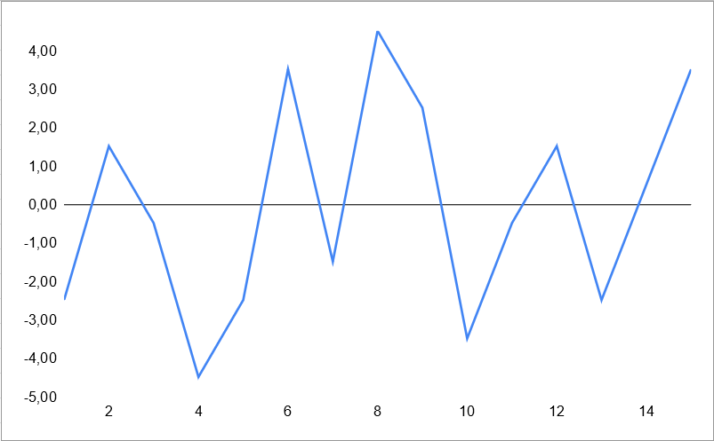
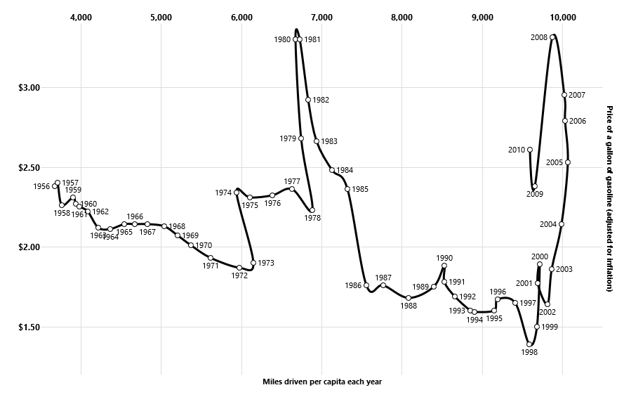

In chapter 7, Cairo mainly discussed about graphs of data set that contains values and percentage or frequency of that value in the data set. Chapter 8 discussed about changes of data through a period of time.
Pros and cons of visualization techniques
A simple technique that we encountered is calculating the difference between each value and the average. This technique helps compare values to the average, to easily see how we are doing compare to the goal.

Difference between each student score and class average
Its disadvantage is rather than comparing, I haven't found any other use of it.
Log transformation is another useful technique. It can transfer exponential growth or decline graph into linear graph.
Graph of 2^x
After log transformation:
Graph of 2^x (log10)
But it can only be used for positive data set, and it's hard to observe values such as mean, mode, or median.
Finally, connected scatter plot. It "works best when turns and swirls don't obscure the data", and is a good replacement for double-axis charts.

A connected scatter plot
Source: https://vega.github.io/vega/examples/connected-scatter-plot/
But sometimes, it's just too complicated to read.